How to fill the Data Processing Elements ?
- Open the Data Processing Elements template, or an empty one.
For each variable to harmonize:
- Enter DataSchema information:
- Name of the variable to harmonize
- Enter the input dataset information :
- Name of the dataset
- Name of the variable(s)
- Enter the data processing information in the Data Processing
Elements :
- Rule category
- Algorithm
- Harmonization status (not mandatory)
Initialization of the harmonization with the DataSchema variable adm_unique_id (mandatory)
1 Open the DataSchema to understand the variable to generate.
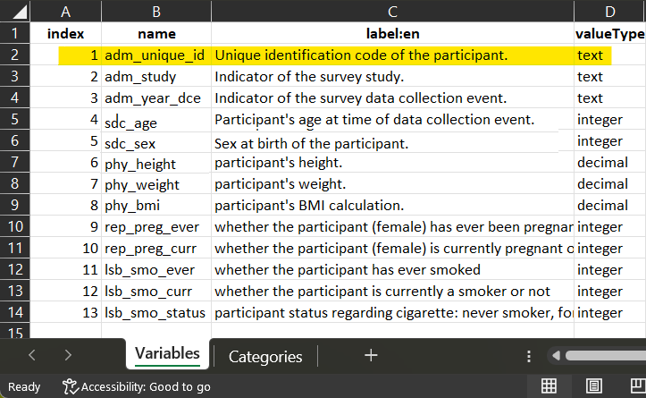
The definition of the variable is in the
DataSchema. The name and the valueType of the variable will
be reported in the Data Processing Elements.
2 Collect in each dataset the column corresponding to the participant identifier.
id in dataset_MELBOURNE_1

id in dataset_MELBOURNE_2
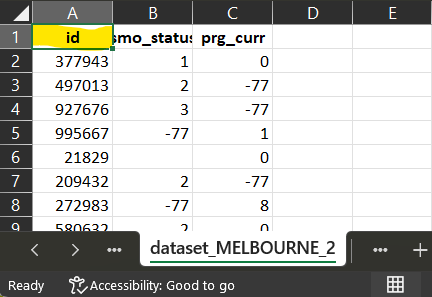
ID in dataset_PARIS

part_id in dataset_TOKYO
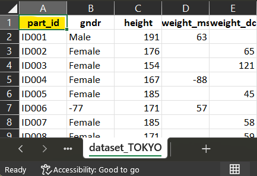
3 Open the Data Processing Elements and fill for each dataset the information accordingly
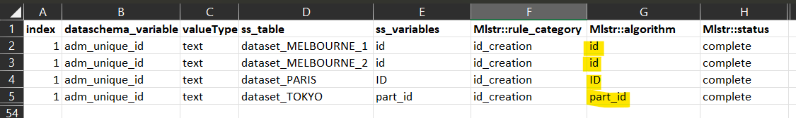
The names in ‘input_dataset’ must be the same in the dossier and in the Data Processing Elements
Harmonization of the DataSchema variable sdc_gender
1 Open the DataSchema to understand the variable to generate.

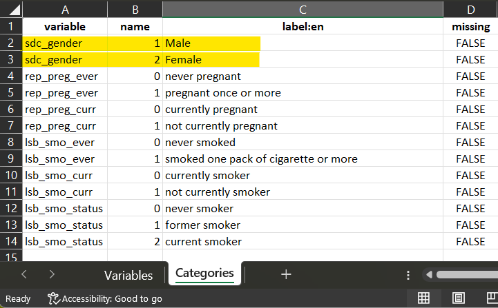
The definition of the variable is in the
DataSchema. The name and the valueType of the variable will be
reported in the Data Processing Elements. When categorical, Each input
variable (when possible) will be recoded to match the DataSchema
variables categories, using rules of harmonization.
For each dataset, use the data dictionary to comprehend codification and start elaborating the script of harmonization.
2 Identidy for each dataset which column (variable) will be associated to the harmonization script to generate the harmonzed variable.
dataset_MELBOURNE_1

For dataset_MELBOURNE_1, the corresponding variable ‘Gender’
share the same codification with the DataSchema variable. The script is
a direct_mapping.
Start filling the Data Processing Elements for each of the dataset, one DataSchema variable after the other.
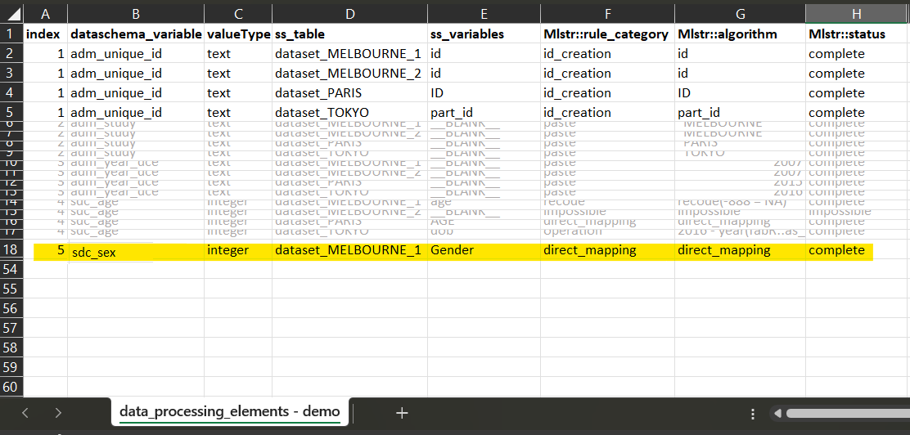
dataset_MELBOURNE_2

For dataset_MELBOURNE_2, There is no corresponding variable
collected. The harmonization is impossible.
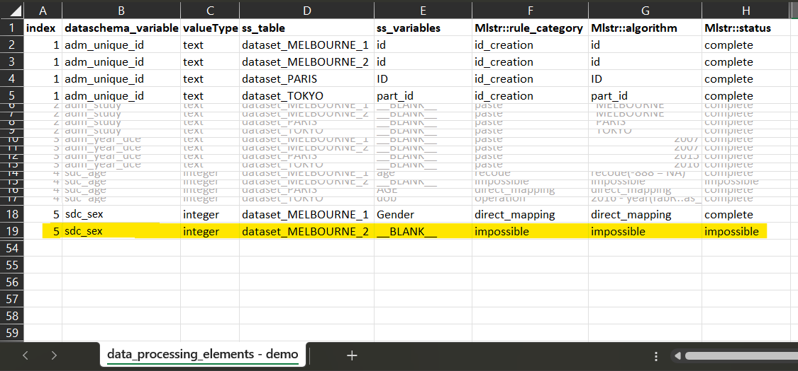
dataset_PARIS

For dataset_PARIS, the corresponding variable ‘SEX’ has a
codification which is compatible with the DataSchema variable
codification. The script is a recode, where each ‘0’
will be recoded into ‘1’ and each ‘1’ into ‘2’.
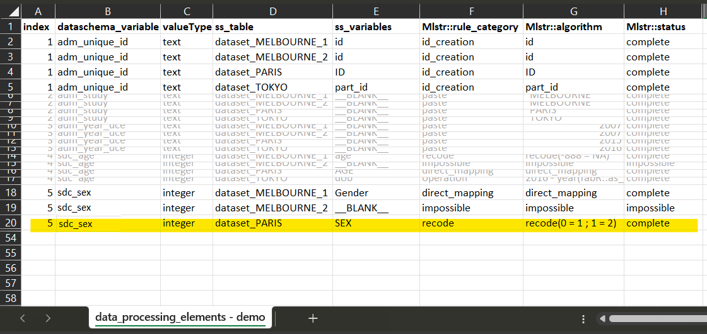
dataset_TOKYO

For dataset_TOKYO, the corresponding variable ‘gndr’, the
script is also a recode, where each ‘Male’ will be
recoded into ‘1’ and each ‘Female’ into ‘2’.
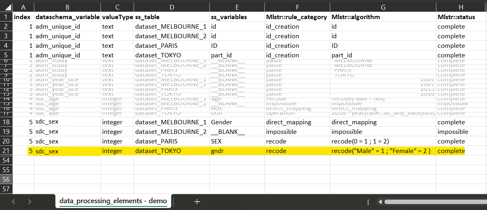
3 Fill the Data Processing Elements.
Process similarily for each DataSchema variable. When further investigation or future information to be completed, put undetermined as a placeholder.
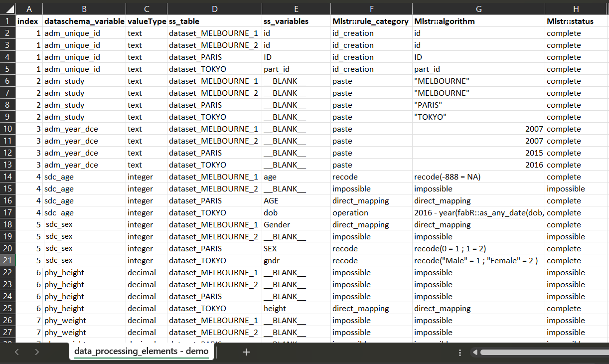
Save your work, close file and upload it in your R environment if necessary.
Warning ⚠ In your environnement, additional objects must exist: * The dossier containing your input dataset(s) * The DataSchema. If not, a minimum DataSchema will be created from elements found in the Data Processing Elements.
dataset_MELBOURNE_1 <- DEMO_files_harmo$dataset_MELBOURNE_1
dataset_MELBOURNE_2 <- DEMO_files_harmo$dataset_MELBOURNE_2
dataset_PARIS <- DEMO_files_harmo$dataset_PARIS
dataset_TOKYO <- DEMO_files_harmo$dataset_TOKYO
# create the dossier
dossier <- dossier_create(list(
dataset_MELBOURNE_1, dataset_MELBOURNE_2, dataset_PARIS, dataset_TOKYO))
dataschema <- DEMO_files_harmo$`dataschema - final`
data_proc_elem <- DEMO_files_harmo$`data_processing_elements - final`
# perform harmonization
harmo_process(dossier,dataschema,data_proc_elem)
Understanding the output : how to detect and correct errors.
If the process of harmonization produces errors in R, the process will not generate the harmonized datasets affected, to avoid version conflicts. The error will be stored in a the column ‘Mlstr_harmo::status’ in its harmonized data dictionary. The error can be read directly in the console using the function show_harmo_error()
data_proc_elem <-
DEMO_files_harmo$`data_processing_elements - with error`
# perform harmonization
harmonized_dossier <- harmo_process(dossier, dataschema, data_proc_elem)
# use the function to help correcting elements of the harmonization;
show_harmo_error(harmonized_dossier)
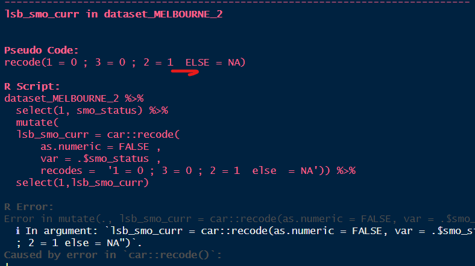
Example : in the Data Processing
Elements, a semi-colon is missing in the script. The error generated can
be visually assessed in the console so the user can make
corrections.
Warning ⚠ Sometimes, the harmonization produces warnings which are to consider and analyse very closely, because they may refer to errors. A common warning generated is when a decimal is converted into an integer. R does not analyses it as an error, but the information is wrongly harmonized in that case. You should always use harmonized_dossier_evaluate(), harmonized_dossier_summary() and harmonized_dossier_visualize() to help in the the assessment of harmonization.